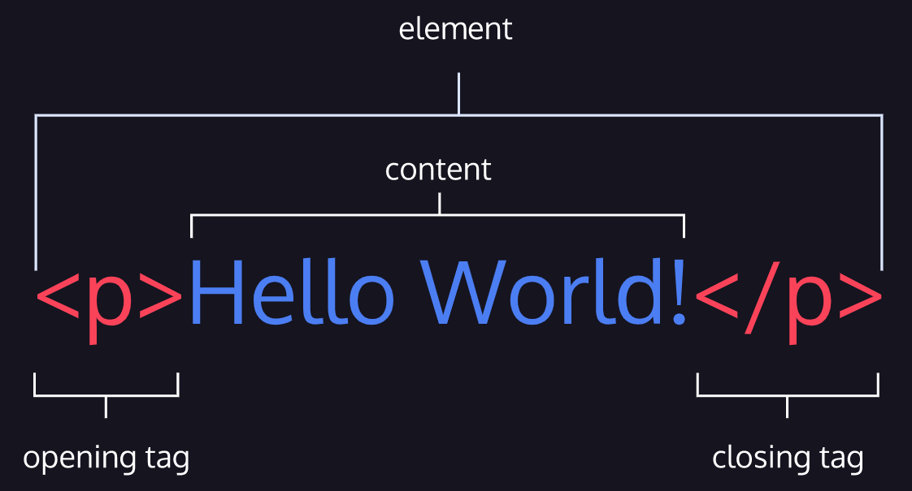

05/10/2022
One of the key HTML elements we use to build a webpage is the body element. Only content inside the opening and closing body tags can be displayed to the screen. Here's what opening and closing body tags look like:
<body>
<body>
Once the file has a body, many different types of content - incuding text, images and buttons - can be added to the body.
<body>
<p> This is a content in the body <p>
<body>
04/10/2022
HTML is composed of elements. These elements structure the webpage and define its content. Let's take a look at how they're written.
The following image displays an HTML paragraph element:
As we can see, the paragraph element is made up of:
A tag and the content between it is called an HTML element. There are many tags that we can use to organize and display text and other types of content, like images.
25/09/2022
HTML provides structure to the content appearing on a website, such as images, text, or videos. HTML stands for HyperText Markup Language:
24/09/2022
Tim Berners-Lee invented the World Wide Web in 1989.
One of his most famous quotes is:
The original idea of the web was that it should be a collaborative space where you can communicate through sharing information.
To know more about Tim Berners-Lee follow this link.